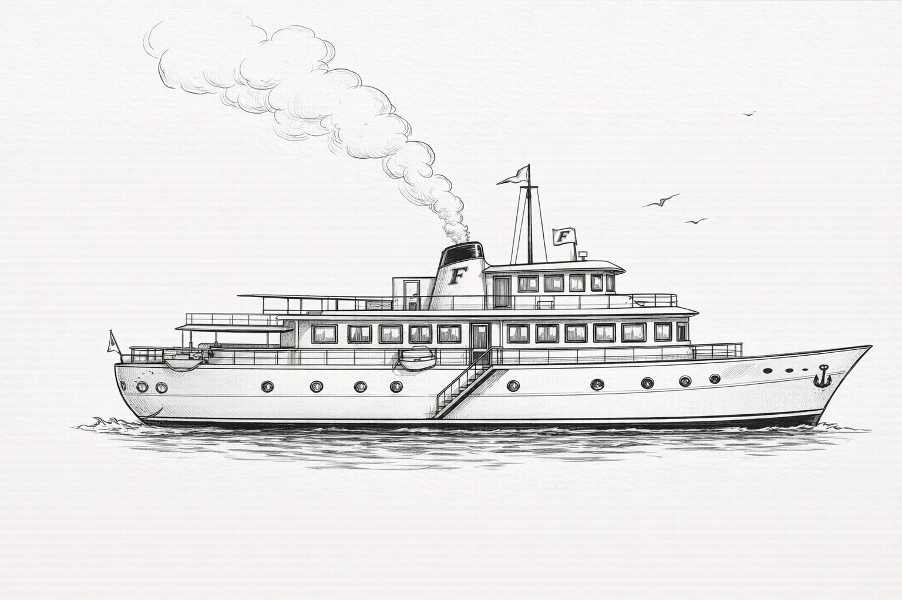

Información para los pasajeros
Yate Burbuja Dorada
Como huésped invitado de Archibald Frath y pasajero a bordo del "Burbuja Dorada", estarás interesado en conocer algún detalle sobre el yate y el crucero que vas a realizar a bordo de él. La lista de los pasajeros está incluida.
El Burbuja Dorada tiene 142 pies de eslora, es lujoso y moderno. Tiene ocho camarotes de lujo. Cuatro a babor y cuatro a estribor y el camarote de Frath en la popa. El gran salón y el pabellón de la Cubierta Lounge son el centro de las actividades sociales a bordo.
El yate tiene una tripulación de 22 hombres a cargo del Capitán Meirre, un experto hombre de mar cuyas hazañas en el Mediterráneo son legenda-rias. Igualmente es legendaria la cocina del barco, compuesta por 7 hombres bajo la dirección del maestro Chef, Francois Pigout.
Los huéspedes encontrarán el yate en Monte-Carlo el 7 de junio de 1.925, y pueden subir a bordo de 9:30 a.m. a 12:00 del mediodía. El almuerzo será servido en la cubierta Lounge a las 12:30 p.m. y el yate partirá a las 2:00 para realizar el crucero, y anclar la primera noche en una pequeña isla situada a 6 millas naúticas del Sur de Cap D'Antibes.

Hechos concernientes a Archibald Frath
Todos vosotros conoceis a Archibald Bemmington Frath, como famoso distribuidor de champán y vinos finos y propietario de una empresa multi-nacional, Maison Frath. Ciudadano originario de la Gran Bretaña, Frath tiene una apasionada devoción por los vinos y en especial por el cham-pagne. Tiene a bordo del Burbuja Dorada una construcción especial, un armario refrigerado para el vino, que contiene aproximadamente 1.000 botellas de champagne. M. Frath. También colecciona arte y piezas de joyería.
En nombre de Mr. Frath, el capitán Meirre y la tripulación del barco: Bienvenido a bordo y que tu crucero con nosotros sea agradable.